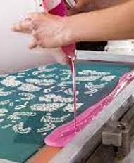
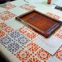

RasiScreenPrinting,where traditional meets innovation,deliverig
exquisite design with every stroke.
Idia's No.1ScreenPrintingCompany
Rasi Screen Printing
Timeless Artistry,
Modern Sophistication
At Rasi Screen printing we interwine the rich heritage at traditonal
craftmanship with contemporary flair to bring you a unique fusion of art
and fashion. With a passion for preserving cultural aesthetics,we
meticulously handcraft each piece, celebrating the intricate beauty of
screen printing, Join us on journey where tradition meets inovation
and let Rasi Screen Printing odom your world
Dive into the world of possibilities with Rasi's diverse range of screen printing
techniques. From traditional methods to cutting edge innovations


Traditional Textile Screen Printing
This method is extensively employed in the fashion
and appeal industry for printing designs onto
garments fabrics and accessories
Advanced UV Screen Printing
UV screen printing has gained popularity due to its
ability to cure instantly when exposed to ultraviolet
ligt,resulting in fast productin
Four-Color Process Printing
Also known as CMYK printing,this method is widely
used for reproducing full-color images with a broad
range of tones and gradients
Client Praise for Rasi Screen Printing
Discover why clients are singing praise for Rasi Screen Printing,From impeccable attention to detail
to timely delivery,our dedication to excellence ensures that every project exceeds expectations.
Aditya Biria
Garment industry
Arvind Pvt Ltd
Garment industry
Raymond Mills
Garment industry
High Quality Printing and On-Time!!
We are incredibly impressed with the exceptional service and quality provide by
Rasi Screen Printing. Their attention to detail,commitment to delivering on time
and the level of professionalism displayed throughout our collaboration have been
outstanding Rasi's expertise inn screen printing has consistently exceeded our
expectations,ensuring that our branding and promotional materials are the
highest standard
We are grateful to their partnership and highly recommend Rasi Screen Printing to anyone in need of top-match printing services -Mr Manjunath Gowda/CRO
Showcasing Our Best and Proudest Works
Explore the captivating world of Rasi's screen printing mastery,exceptional
creations imbued with precision,innovation and enduring sophistication
Reach Out to Rasi Screen Printing Today!
Have questions or ready to start your next printing project? Don't hesitate to contact us! Our
frienly team at Rasi Screen Printing is here to assist you every step of the way
Contact Us
Phone number
+918292726389 +9182922726389
Address
1221.beach road kozhicode-560060
Opening Hours
Everyday 09.00am to 10.pm
WE ARE BEST!
Rasi is a premier destination for those
seeking unparalled excelence in screen
printing services. awaith a arich legacy of
craftmanship and innovation,we pride
ourselves on delivering captivate and inspire. From our
stste-of-the art facilities